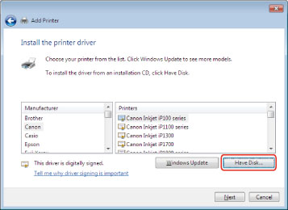
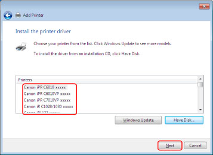

You can install the driver by specifying the "inf" file from the [Devices and Printers] (or [Printers and Faxes] or [Printers]) folder.
|
IMPORTANT
|
|
Be sure to log on as a member of Administrators when you start the computer.
|
Select [Devices and Printers] from the [ ] (Start) menu.
] (Start) menu.
] (Start) menu.If you are using Windows 8/8.1/Server 2012/Server 2012 R2, from the desktop, display the charm bar to the right of the screen, and select [ Settings] - [Control Panel] - [Devices and Printers].
Settings] - [Control Panel] - [Devices and Printers].
Settings] - [Control Panel] - [Devices and Printers].If you are using Windows Vista, select [Control Panel] - [Printers] from the [] (Start) menu.
] (Start) menu.Click [Add a printer] (or [Install a printer]) → follow the instructions in the Add Printer Wizard.
3.
Click [Add a local printer](or [Add a local printer or network printer with manual settings]).
4.
Select [Create a new port] → select [Standard TCP/IP Port] from [Type of port] → click [Next].
5.
Enter the IP address of your device in [Hostname or IP address] → follow the instructions on the screen.
6.
Click [Finish].
The procedure for adding a port is finished. Next, install the driver.
|
NOTE
|
|
If the device is not found using the above procedure, it might be recognized as an unknown device. If this happens, follow the steps below.
1. Display [Control Panel] → [Device Manager].
2. Select [Other Devices] → [Unknown Device] → click [Update Driver Software] from the [Action] menu.
3. Click [Browse my computer for driver software] → proceed to step 8.
|
7.
Click [Have Disk].

8.
Click [Browse] → select the folder where the driver is stored → click [OK].

9.
Select the device you are using from [Printers] → click [Next].

10.
Install the driver by following the instructions on the screen to continue → click [Finish].
The device icon is displayed in [Devices and Printers] (or [Printers and Faxes] or [Printers]) in the Windows Control Panel.
The driver is now installed.